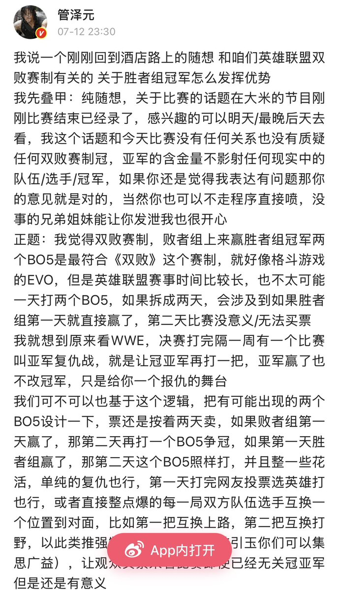

1.胜者组冠军必须在决赛有优势，如果完全公平，连优先选边都没有，BLG完全可以说我和韩华大场1:1，小场5:4，我不承认韩华冠军，我BLG才是冠军。
2.BLG选择参赛，代表它承认了msi赛制的合理性，即胜者组冠军在决赛第一把有优先选边和优先bp优势。
3.在BLG在决赛有优势的情况下，韩华还是战胜了BLG，BLG必须承认韩华是真正的冠军。
4.更深层的问题: 胜者组冠军仅拥有第一局的优先选边和bp，这一优势是否合理？我个人认为这个优势是不够的，但比赛需要考虑到观赏性，而决赛直接给胜者组冠军一小分，在bo5里面是会极大减少比赛观赏性的不可接受的巨大优势。
我个人认为比较合理的胜者组冠军在决赛的优势: 所有5局比赛的优先选边和bp权，或者bo9的一小分
2.BLG选择参赛，代表它承认了msi赛制的合理性，即胜者组冠军在决赛第一把有优先选边和优先bp优势。
3.在BLG在决赛有优势的情况下，韩华还是战胜了BLG，BLG必须承认韩华是真正的冠军。
4.更深层的问题: 胜者组冠军仅拥有第一局的优先选边和bp，这一优势是否合理？我个人认为这个优势是不够的，但比赛需要考虑到观赏性，而决赛直接给胜者组冠军一小分，在bo5里面是会极大减少比赛观赏性的不可接受的巨大优势。
我个人认为比较合理的胜者组冠军在决赛的优势: 所有5局比赛的优先选边和bp权，或者bo9的一小分
